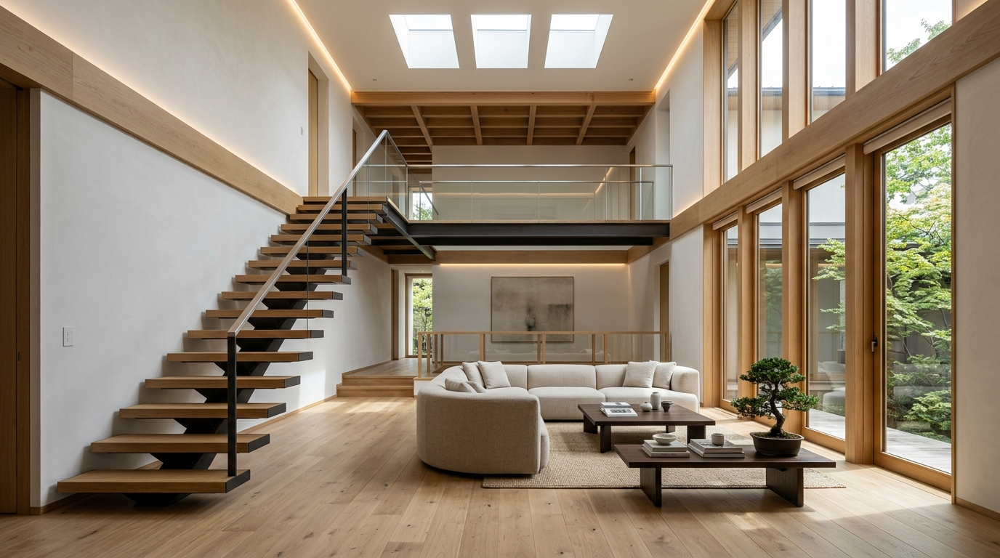

💡
Cases
【赤入れポイント：建築実例・写真素材の差し替え（撮影も可）】
平屋とモダン2階建てのモデル実例です。実際に紹介・成約された物件の写真（外観・内観）に差し替えます。完成写真だけでなく「ご家族が寛ぐ日常スナップ」や「相談風景」など写真はあるだけ大歓迎です（手元になければ撮影にお伺いすることも可能です ※別途費用・お見積り）。
ご紹介事例

中庭の木々を愛でる、光と風が通り抜ける平屋の住まい
敷地面積 78坪 / 延床面積 28坪。プライバシーを守りつつ、どの部屋からも緑を感じられる設計。住宅ローンと建築費のバランスを徹底追求した実例です。

何十年経っても飽きのこない、洗練されたシンプルモダン空間
敷地面積 62坪 / 延床面積 32坪。スリット天窓と鉄骨スケルトン階段による開放的なリビング。メンテナンス性と断熱性能にも配慮したこだわりの邸宅。